EECS 442 Computer Vision Projects
Project 0: Dithering Images
The zeroth project included a quick NumPy intro, before requiring us to implement various methods of image quantization and dithering. Below, I've included two examples below of the output from Floyd-Steinberg dithering.
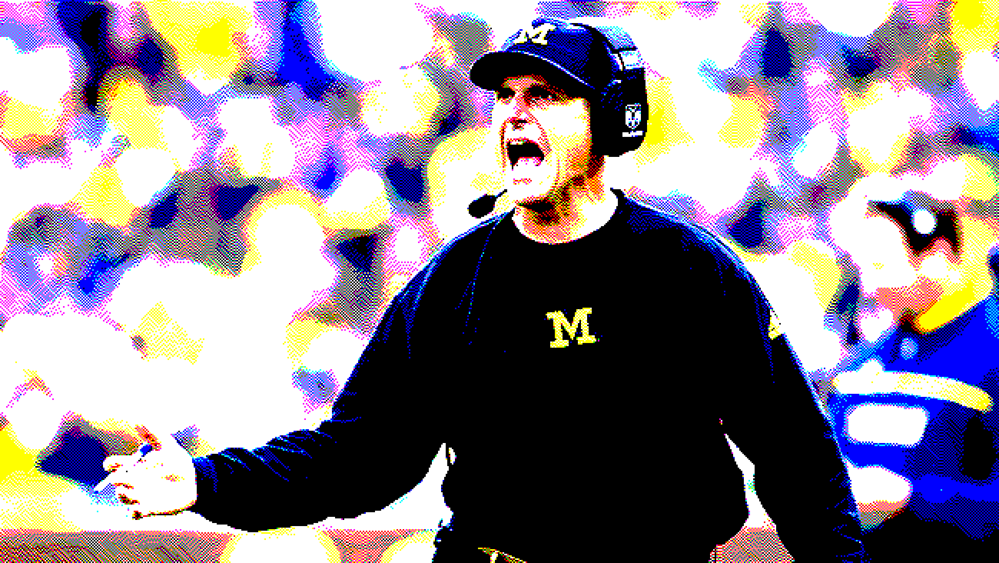
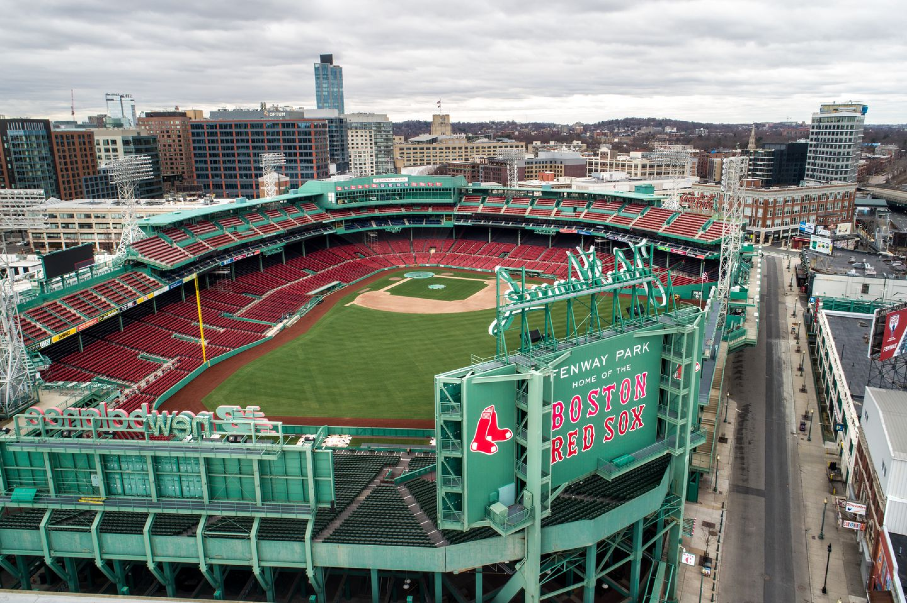
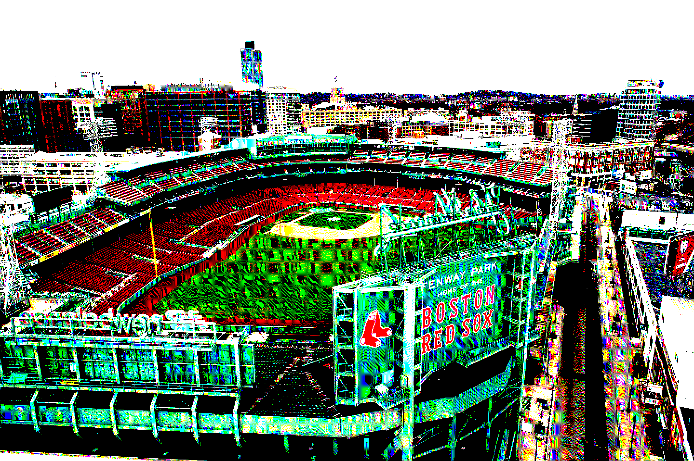
Project 1: Coloring Prokudin-Gorsky's Photographs
Sergei Mikhailovich Prokudin-Gorsky (1863-1944) was a Russian photographer who took black-and-white photographs through three color filters -- red, blue, and green -- with the hope that people in the future could combine them to produce color images. In this project, I made his dream a reality, by finding the best alignment between the three images (using normalized cross-correlation) and overlaying them. I've included two examples below of Prokudin-Gorsky's photography, along with the best-aligned combine color image.
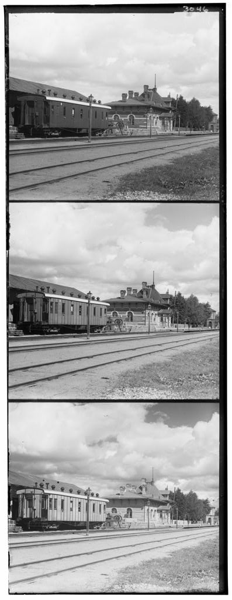
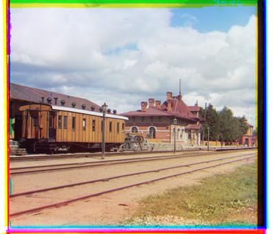
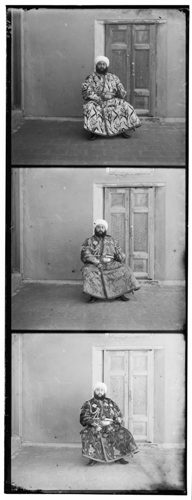
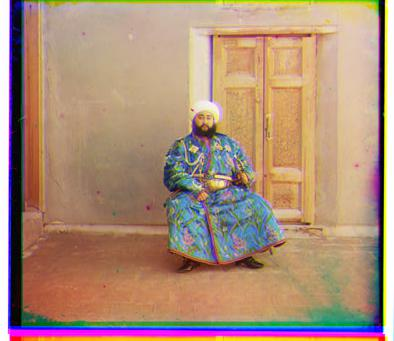
Project 2: Feature Extraction and Blob Detection
This project included a variety of tasks relating to image feature extraction. The focus was primarily implementing and demonstrating various filters, including Gaussian filters (for smoothing), Laplacian-of-Gaussians, difference-of-Gaussians, the Sobel operator, and the Harris corner score. As an application, we tried to identify and count the number of cells in an image. Below, I've included an image of cell detections, using difference-of-Gaussians.
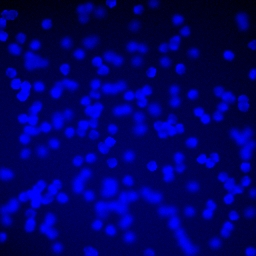
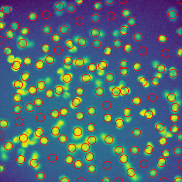
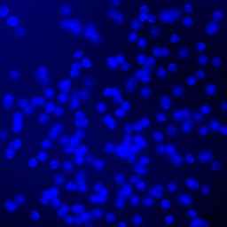
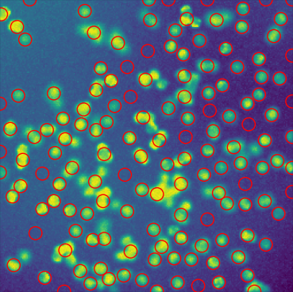
Project 3: Homography and Warping Images
The idea behind this project is somewhat simple: given a pair of overlapping images, compute a homography transformation, which allows us to warp one image onto the other, and stitch them together to produce a single image. I matched AKAZE features between the two images, used RANSAC to fit a homography transformation between the two images, and then used OpenCV to warp one image and stitch it onto the other. Below is an example of the matched features in two input images, and their combined output.
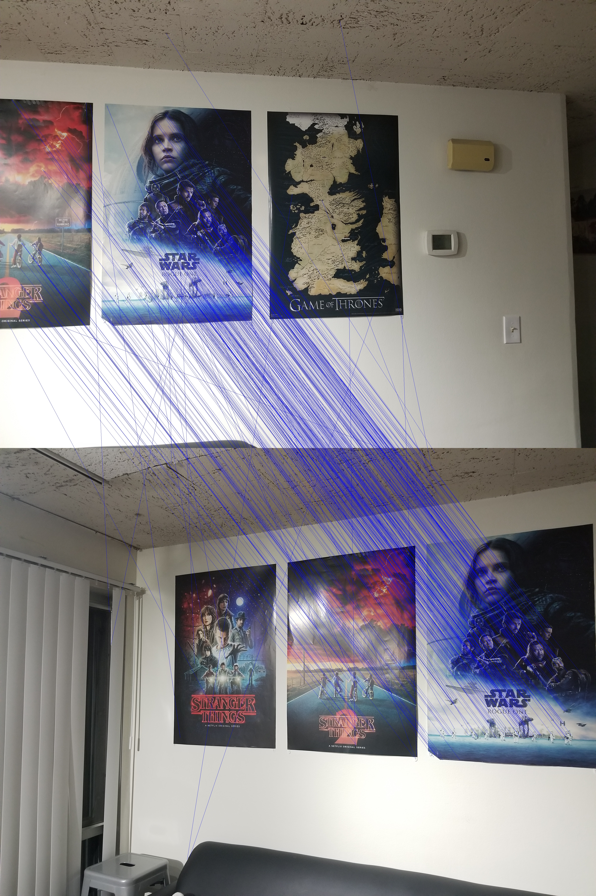

Project 4: Gradient Descent and Neural Networks
This project focused on gradient descent, and then later build neural networks from scratch. Below is an animation of fitting a homography transformation (i.e. a perspective shift) using gradient descent. Unfortunately, I don't have any nice visualizations from the remainder of the project.
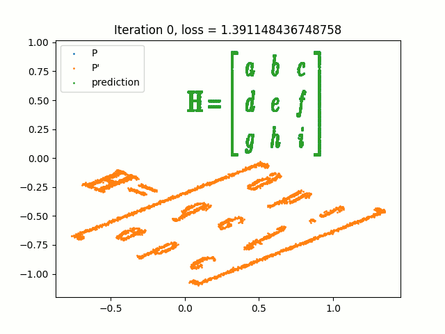
Project 5: Neural Networks with PyTorch
In the final project of the class, we explored some various other applications of neural networks, while simultaneously introducing the PyTorch library. We performed image classification with a convolutional neural network, generated adversarial examples for a pretrained image classifier, and performed semantic segmentation of building facades. Below is an example of an adversarial attack, along with the output of my semantic segmentation network (orange denotes window, blue denotes facade, and black is "other").
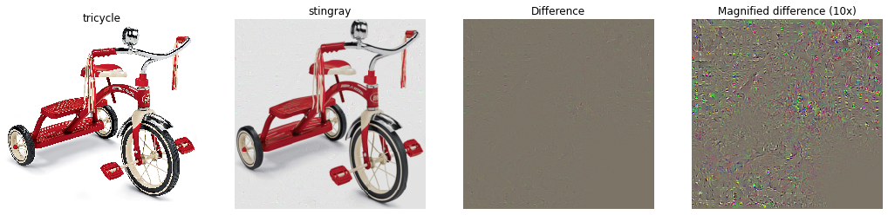
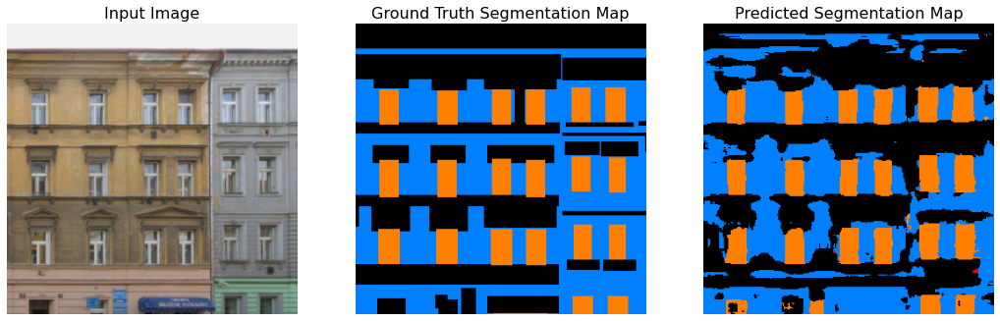